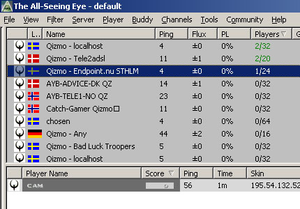
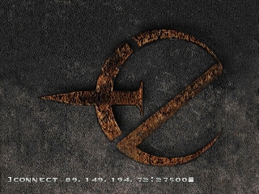
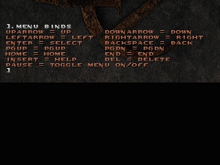
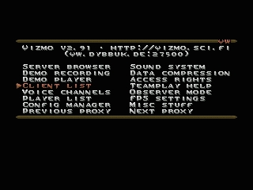
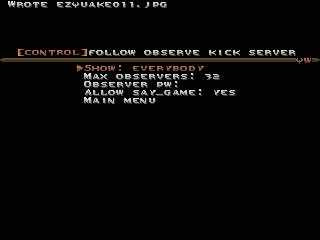
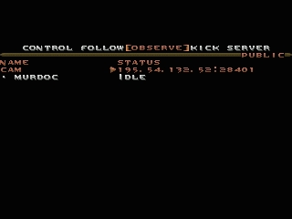
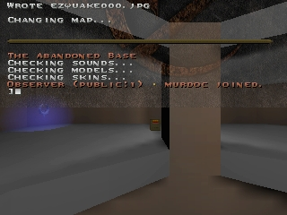

Spectating via Qizmo
First of all we need to find a Qizmo.
Start All Seeing Eye and look for a qizmo with a cam on it. If you found one, copy the ip (select server then press ctrl+c).

Step 2
Now start quake and type
connect then press ctrl+v
connect 89.149.194.72:27500 (in this case)
press enter to connect to the qizmo.

Step 3
We need binds to control the qizmo menu. We do this by typing
.menu binds

Step 4
Press ~ to get out of the console, now we see the qizmo menu. Press your [downarrow] key to select client list. Press [enter]

Step 5
The following menu will show up.

We need to select observe, we do this by pressing the [rightarrow] 2 times.

Now select the cam by using the [up-] or [downarrow] then press [enter] to observe the cam.

You’re now connected and watching the game through a qizmo-cam.